ublox F9P
The IMX can be configured for use with uBlox ZED-F9P multi-band GNSS receivers. This can be done using either the EvalTool GPS Setting tab or the IMX DID_FLASH_CONFIG.ioConfig and DID_FLASH_CONFIG.RTKCfgBits fields.
| GPS Ports | Value |
|---|---|
| GPS Source | serial 0, serial 1, or serial 2 |
| GPS Type | ublox F9P |
| GPS1 Timepulse | Disable or IMX pin connected to ZED-F9P PPS |
| RTK Rover | Value |
|---|---|
| GPS RTK Mode | F9P Position or F9P Compass |
| RTK Base | Value |
|---|---|
| Serial Port 0 (Single GNSS only) | GPS1 - RTCM3 |
| USB Port | GPS1 - RTCM3 |
The following sections detail how to interface and configure the IMX for operation using the ZED-F9P. See RTK precision positioning and RTK compassing for RTK operation principles.
Rugged-3¶
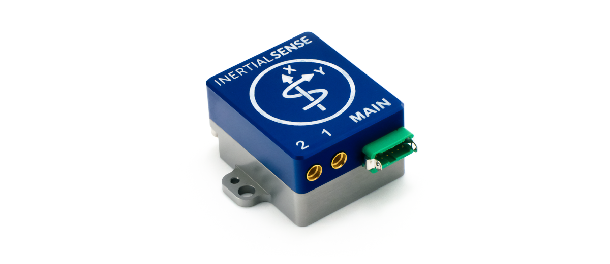
The Rugged-3 INS contains the either single or dual ZED-F9P onboard supporting RTK positioning and compassing. GPS 1 and GPS 2 are connected to serial ports 1 and 0 respectively on the IMX.
Single GNSS Settings¶
Use the following IMX settings with the Rugged-3-G1 (single GNSS receiver). These settings can be applied either using the EvalTool GPS Settings tab or the IMX DID_FLASH_CONFIG.ioConfig and DID_FLASH_CONFIG.RTKCfgBits fields.
GPS Ports¶
Set the GPS1 source to Serial 1 and type to ublox F9P.
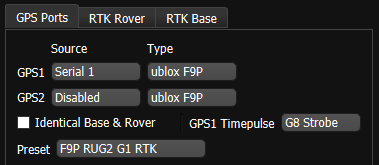
| DID_FLASH_CONFIG | Value |
|---|---|
| ioConfig (firmware >=1.8.5) | 0x0244a040 |
RTK Rover¶
Enable RTK rover mode by selecting F9P Precision Position.
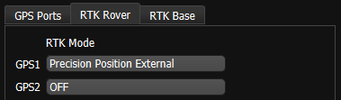
| DID_FLASH_CONFIG | Value |
|---|---|
| RTKCfgBits | 0x00000002 |
RTK Base¶
To configuring a system as an RTK base, disable the RTK Rover by setting the GPS1 and GPS2 RTK Mode to OFF, and select the appropriate correction output port on the IMX.
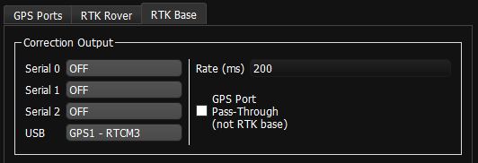
| DID_FLASH_CONFIG | Value |
|---|---|
| RTKCfgBits | 0x00000900 |
Dual GNSS Settings¶
Use the following IMX settings with the Rugged-3-G2 (dual GNSS receivers). These settings can be applied either using the EvalTool GPS Settings tab or the IMX DID_FLASH_CONFIG.ioConfig and DID_FLASH_CONFIG.RTKCfgBits fields.
GPS Ports¶
Set GPS 1 and 2 to source Serial 1 and Serial 0. the serial port that the ZED-F9P is connected to and type to ublox F9P.
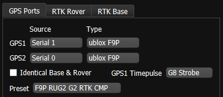
| DID_FLASH_CONFIG | Value |
|---|---|
| ioConfig (firmware >=1.8.5) | 0x025ca040 |
RTK Rover¶
Enable RTK rover mode by selecting Precision Position External. GPS1 is designated for Precision Position External and GPS2 for F9P Compass settings. Either or both can be enabled at the same time.
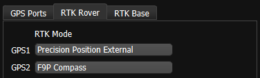
| DID_FLASH_CONFIG | Value |
|---|---|
| RTKCfgBits | 0x00000006 |
RTK Base¶
To configuring a system as an RTK base, skip the RTK rover settings, and select the appropriate correction output port on the IMX. Notice that IMX serial port 0 and 1 may be unavailable and occupied by the dual ZED-F9P receivers.
| DID_FLASH_CONFIG | Value |
|---|---|
| RTKCfgBits | 0x00000900 |
Rugged-3-IMX-5 to ZED-F9P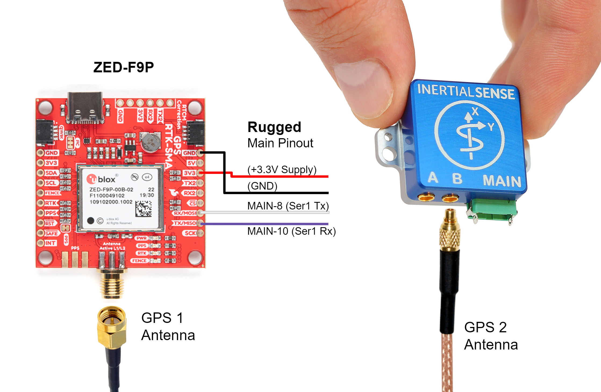¶
A +3.3V or +5V supply is needed to power the ZED-F9P when using the Rugged-1 IMX. A USB +5V supply can be used if available. The Rugged-1 must be configured for Serial Port 1 TTL voltage. See hardware configuration for Rugged v1.0 or Rugged v1.1 for details.
Settings¶
See the single GNSS settings.
EVB-2 to ZED-F9P Interface¶
Use the following wiring when connecting a single ZED-F9P receiver to the EVB-2. GPS1 is typically routed to serial port 1 and provides PPS to the IMX.
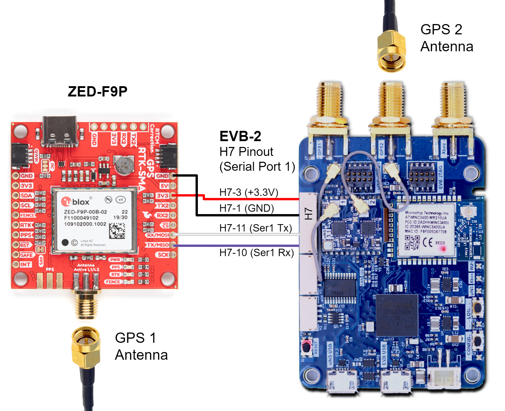
EVB-2 to Dual ZED-F9 Interface¶
For dual-receiver RTK compassing setups, connect GPS1 and GPS2 as shown below. Verify both receivers share the same reference clock and PPS to maintain synchronization.
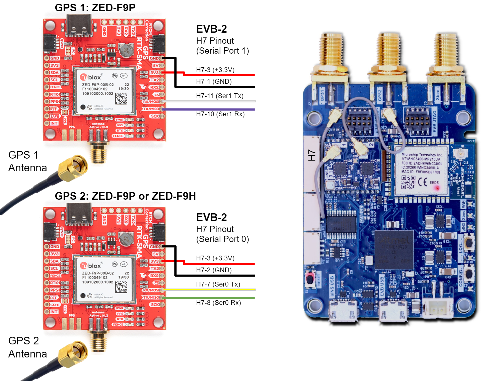
RTK Base Messages¶
In RTK mode, the ZED-F9P requires RTCM version 3 messages supporting DGNSS according to RTCM 10403.3.
ZED-F9 Rover Messages¶
The ZED-F9P operating in RTK rover mode can decode the following RTCM 3.3 messages.
| Message type | Description |
|---|---|
| RTCM 1001 | L1-only GPS RTK observables |
| RTCM 1002 | Extended L1-only GPS RTK observables |
| RTCM 1003 | L1/L2 GPS RTK observables |
| RTCM 1004 | Extended L1/L2 GPS RTK observables |
| RTCM 1005 | Stationary RTK reference station ARP |
| RTCM 1006 | Stationary RTK reference station ARP with antenna height |
| RTCM 1007 | Antenna descriptor |
| RTCM 1009 | L1-only GLONASS RTK observables |
| RTCM 1010 | Extended L1-only GLONASS RTK observables |
| RTCM 1011 | L1/L2 GLONASS RTK observables |
| RTCM 1012 | Extended L1/L2 GLONASS RTK observables |
| RTCM 1033 | Receiver and antenna description |
| RTCM 1074 | GPS MSM4 |
| RTCM 1075 | GPS MSM5 |
| RTCM 1077 | GPS MSM7 |
| RTCM 1084 | GLONASS MSM4 |
| RTCM 1085 | GLONASS MSM5 |
| RTCM 1087 | GLONASS MSM7 |
| RTCM 1094 | Galileo MSM4 |
| RTCM 1095 | Galileo MSM5 |
| RTCM 1097 | Galileo MSM7 |
| RTCM 1124 | BeiDou MSM4 |
| RTCM 1125 | BeiDou MSM5 |
| RTCM 1127 | BeiDou MSM7 |
| RTCM 1230 | GLONASS code-phase biases |
| RTCM 4072.0 | Reference station PVT (u-blox proprietary RTCM Message) |
ZED-F9 Base Output Messages¶
The ZED-F9P operating in RTK base mode will generate the following RTCM 3.3 output messages depending on whether the satellite constellation have been enabled. See the Constellation Selection for information on enabling and disabling satellite constellations.
| Message Type | Period (sec) | Description |
|---|---|---|
| RTCM 1005 | 2 | Stationary RTK reference station ARP |
| RTCM 1074 | 0.4 | GPS MSM4 |
| RTCM 1077 | 0.4 | GPS MSM7 |
| RTCM 1084 | 0.4 | GLONASS MSM4 |
| RTCM 1087 | 0.4 | GLONASS MSM7 |
| RTCM 1094 | 0.4 | Galileo MSM4 |
| RTCM 1097 | 0.4 | Galileo MSM7 |
| RTCM 1124 | 0.4 | BeiDou MSM4 |
| RTCM 1127 | 0.4 | BeiDou MSM7 |
| RTCM 1230 | 2 | GLONASS code-phase biases |
NTRIP Messages¶
The NTRIP server must provide the necessary subset of RTCM3 messages supported by the IMX-RTK. See the NTRIP page for an overview of NTRIP.
ZED-F9P Firmware Update¶
The following section describes how to view the current GPS firmware version and how to update the firmware on the uBlox ZED-F9P GNSS receiver through the IMX.
GPS Firmware Version¶
The current GPS firmware version can be read through the DID_GPS1_VERSION and DID_GPS2_VERSION messages.
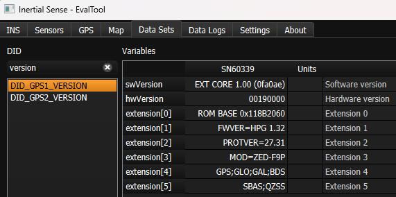
Firmware Update¶
The following steps describe how to update the uBlox ZED-F9P firmware. The uBlox U-Center application software and firmware binary can be downloaded from the uBlox ZED-F9P documentation and resources webpage.
-
Enable IMX Serial Bypass - Send the system command (
DID_SYS_CMD)SYS_CMD_ENABLE_SERIAL_PORT_BRIDGE_USB_TO_GPS1orSYS_CMD_ENABLE_SERIAL_PORT_BRIDGE_USB_TO_GPS2to enable serial bypass on the IMX. This will create a direct connection between the current IMX serial port and the GPS. This is done in the EvalTool using the Factory Options dialog in the Settings -> General tab.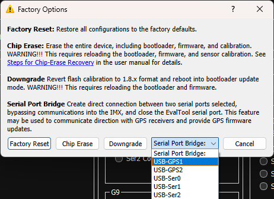
-
Update Using U-Center - With the IMX serial bypass enabled, the uBlox U-Center software can connect directly to the ZED-F9P GPS. Use the following steps in the ublox U-Center app:
- Open the serial port with baudrate 921600.
- Select Tool -> Firmware Update and specify the uBlox F9P firmware file (i.e.
UBX_F9_100_HPG132...bin).
- Enable "Use this baudrate for update" as 921600.
- Disable "Enter safeboot before update".
- Enable "Send training sequence".
-
Start the firmware update by pressing the small green "GO" circle in the bottom left corner of the Firmware Update Utility dialog.
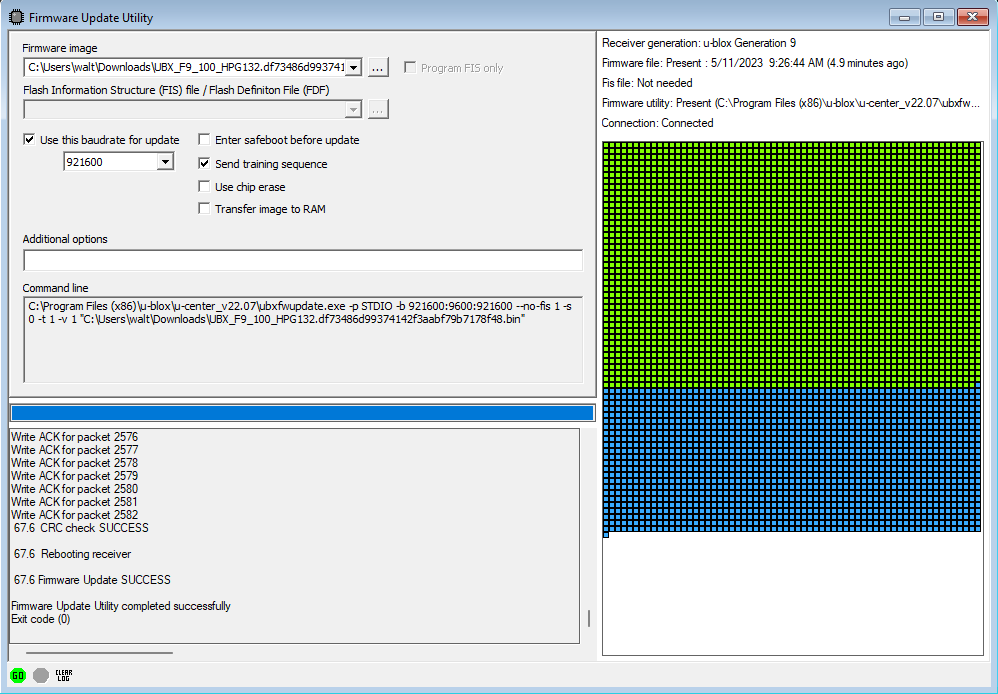
- Power cycle the IMX.
Purchasing the ZED-F9¶
The following components work well when sourcing ZED-F9 receivers and matching antennas for multi-band GNSS installations.
Multi-Band GNSS Components¶
The following is a list of the ZED-F9P GNSS receivers and compatible antenna(s).
| Item | Supplier# | Description |
|---|---|---|
| 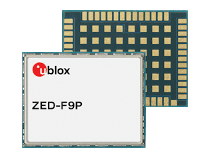 | ZED-F9P-01B | ublox ZED-F9P high precision GNSS SMT module. GNSS bands: L2OF, L2C, E1B/C, B2I, E5b, L1C/A, L1OF, B1I. Concurrent GNSS: BeiDou, Galileo, GLONASS, GPS / QZSS. RTK 1cm horizontal accuracy. |
| 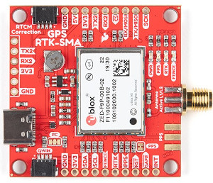 | GPS-16481 | SparkFun GPS-RTK-SMA breakout board with ZED-F9P GNSS module. |
| 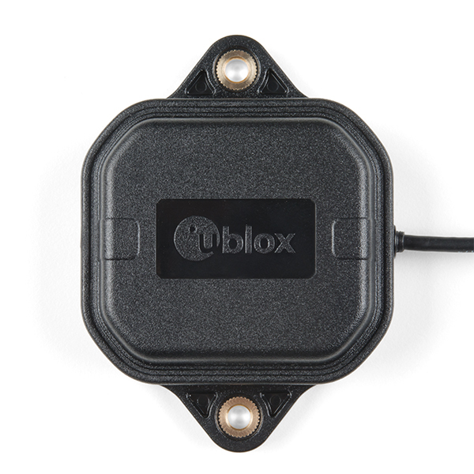 | SparkFun: ANN-MB-00 ublox: ANN-MB-00 |
ublox Multi‑frequency GNSS antenna (L1, L2/E5b/B2I) active magnet mount. Supports GPS, GLONASS, Galileo, and BeiDou. 5m SMA cable. Designed for ZED-F9P. |
| 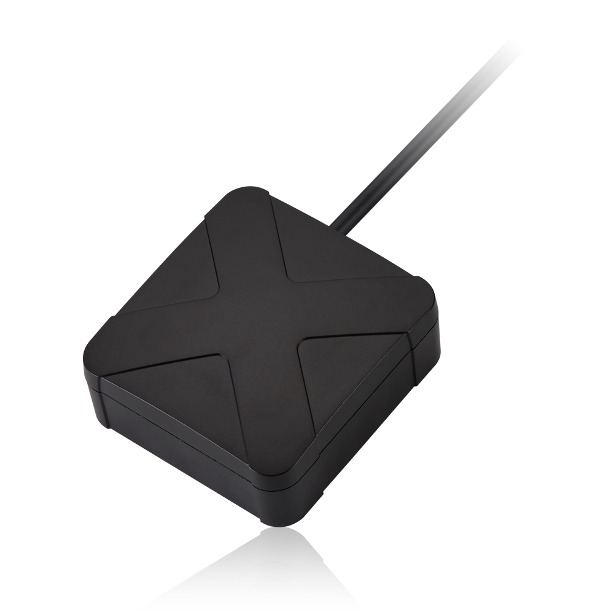 | AA.200.151111 | Taoglas multi‑band GNSS antenna (GPS/QZSS-L1/L2, GLONASS-G1/G2/G3, Galileo-E1/E5a, and BeiDou-B1/B2) active magnet mount. Supports GPS, GLONASS, Galileo, and BeiDou. 1.5m SMA cable. 63.2 x 67.2 mm. |
| 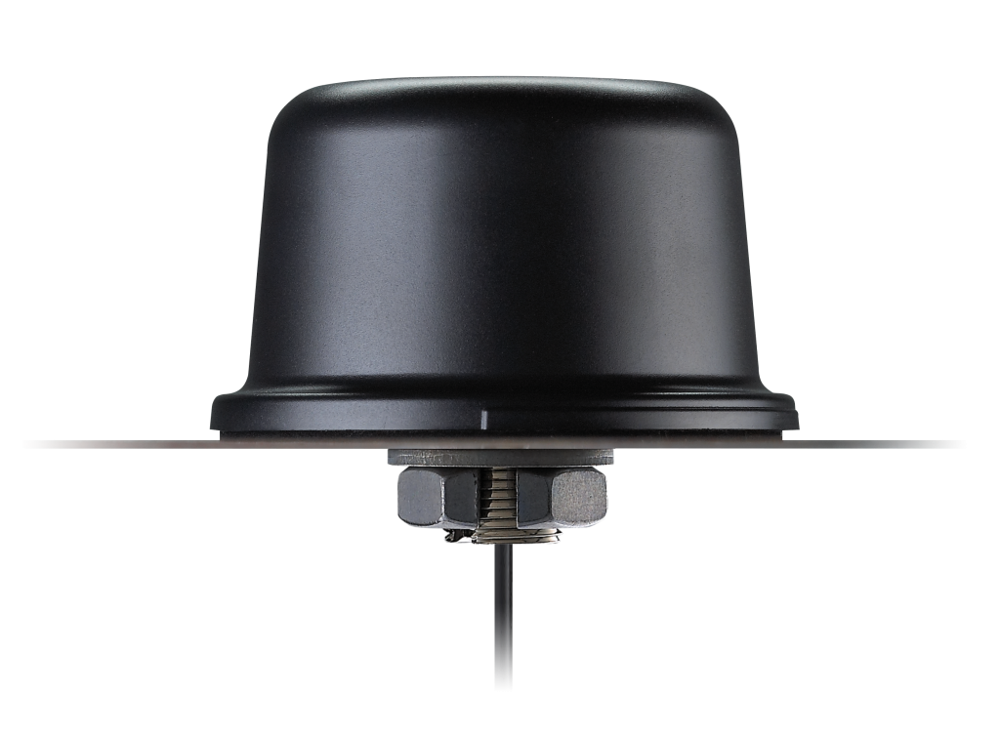 | QHA.50.A.301111 | Taoglas multi-band GNSS antenna (GPS/QZSS-L1/L2, GPS/QZSS/IRNSS-L5, QZSS-L6, Galileo-E1/E5a/E5b/E6, GLONASS-G1/G2/G3, BeiDou-B1/B2a/B2b/B3). permanent mount. IP67 rated waterproof. 3m RG-174 SMA cable. 94mm (dia). |
| 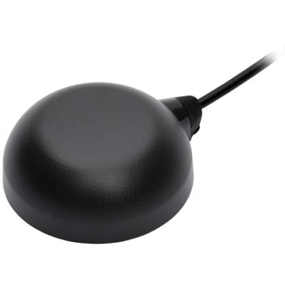 | TW8889 | Tallysman multi‑band GNSS antenna (GPS/QZSS-L1/L2, GLONASS-G1/G2/G3, Galileo-E1/E5a, and BeiDou-B1/B2) active magnet mount. Supports GPS, GLONASS, Galileo, and BeiDou. 3m SMA cable. 47mm (dia), 52g. |
| 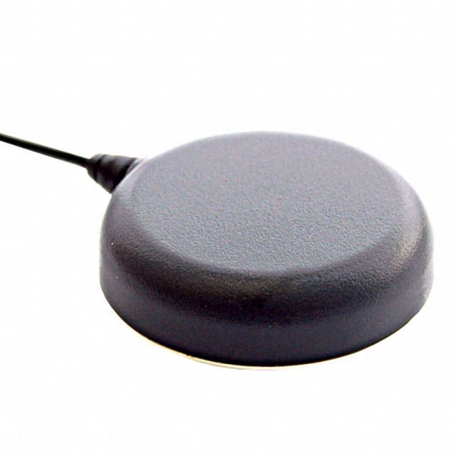 | TW7882 | Tallysman multi‑band GNSS antenna (GPS/QZSS-L1/L2, GLONASS-G1/G2/G3, Galileo-E1/E5a, and BeiDou-B1/B2) active magnet mount. Supports GPS, GLONASS, Galileo, and BeiDou. 3m SMA cable. 69mm (dia), 180g. |
| 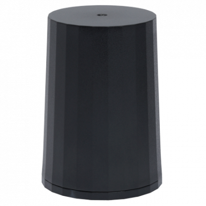 | HC882 | Tallysman multi‑band helical GNSS antenna (GPS/QZSS-L1/L2, GLONASS-G1/G2/G3, Galileo-E1/E5a, and BeiDou-B1/B2) active magnet mount. Supports GPS, GLONASS, Galileo, and BeiDou. SMA. 44.2mm (dia), 42g. |
| 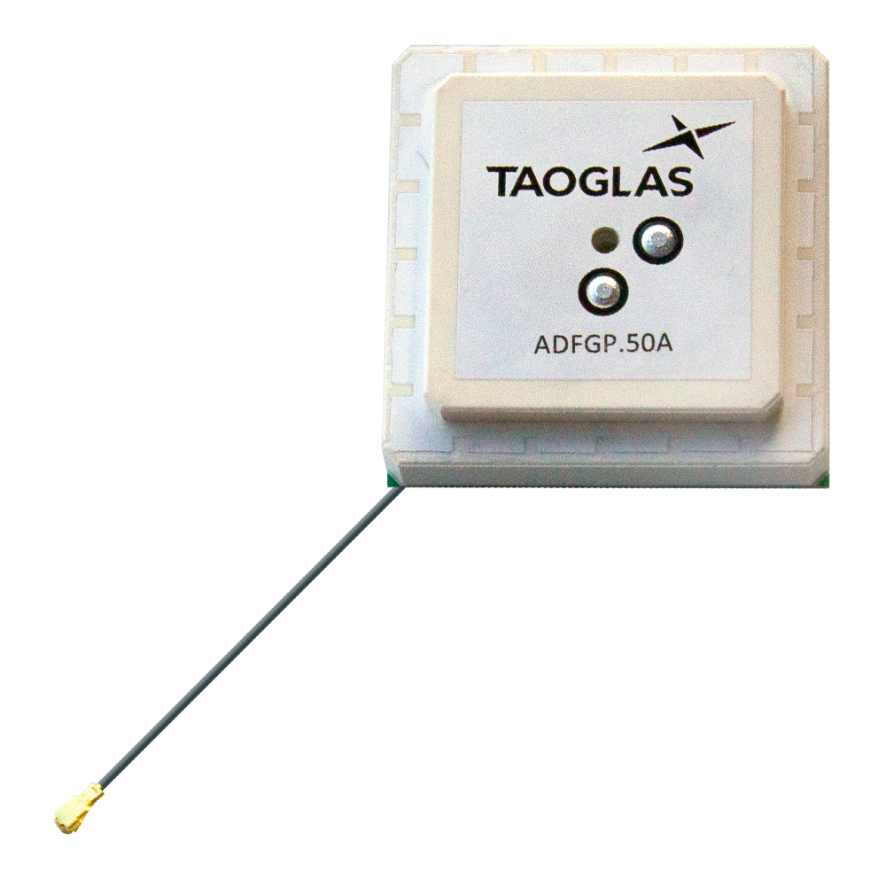 | ADFGP.50A.07.0100C | Taoglas embedded multi-band GNSS antenna (GPS/QZSS L1/L2, GLONASS G1/G2/G3, Galileo E1/E5a/E5b, BeiDou B1/B2a/B2b). 50x50mm, 95.5g. |
| 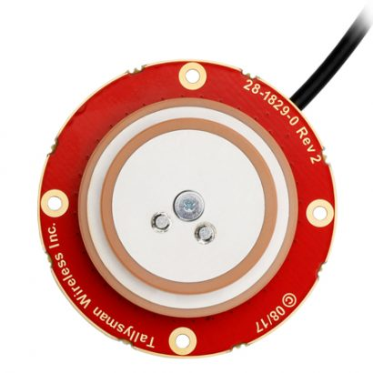 | TW1889 | Tallysman embedded multi-band GNSS antenna (GPS/QZSS L1/L2, GLONASS G1/G2/G3, Galileo E1/E5b, BeiDou B1/B2). 48mm (dia), 37g. |
| 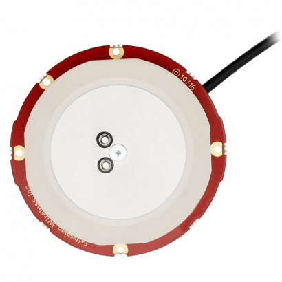 | TW3887 | Tallysman multi-band GNSS antenna (GPS/QZSS-L1/L2, GLONASS-G1/G2/G3, Galileo-E1/E5a, and BeiDou-B1/B2). 60mm (dia), 70g. |